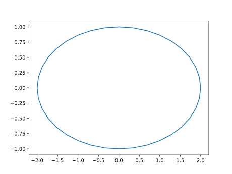
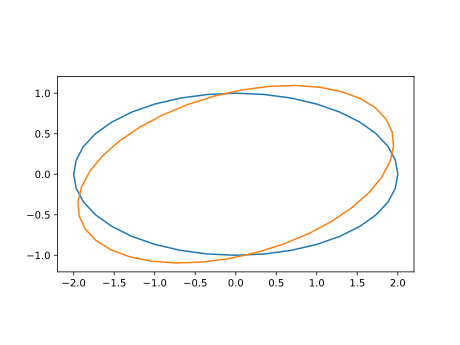
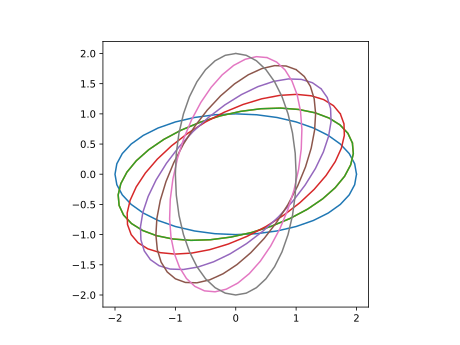

第10回：線形代数
■ ベクトル
次元
寸法
添字
添字は 1から数える
julia> v=[1,2,3]
3-element Array{Int64,1}:
1
2
3
julia> length(v)
3
julia> size(v)
(3,)
julia> v[1]=5
5
julia> v
3-element Array{Int64,1}:
5
2
3▶︎ ベクトルのスカラー倍、和差
julia> v=[1,2,3]
3-element Array{Int64,1}:
1
2
3
julia> v * 2
3-element Array{Int64,1}:
2
4
6
julia> v + 2
3-element Array{Int64,1}:
3
4
5▶︎ ベクトル関数
絶対値
内積
随伴
転置
空間ベクトルの外積
julia> a=[1,1,0]
3-element Array{Int64,1}:
1
1
0
julia> b=[1,0,1]
3-element Array{Int64,1}:
1
0
1
julia> c=[0,1,1]
3-element Array{Int64,1}:
0
1
1
julia> dot(a,b)
1
julia> cross(a,b)
3-element Array{Int64,1}:
1
-1
-1▶︎ ベクトル関数
■ 行列
次元
寸法
軸
添字
julia> a=[11 12; 21 22]
2×2 Array{Int64,2}:
11 12
21 22
julia> size(a)
(2, 2)
julia> a[1,1]
11
julia> a[1,2]=30
30
julia> a
2×2 Array{Int64,2}:
11 30
21 22■ 行列のスカラー倍、和差
julia> a * 2
2×2 Array{Int64,2}:
22 60
42 44
julia> a + 2
2×2 Array{Int64,2}:
13 32
23 24■ 行列関数
随伴
転置
階数
行列式
julia> a'
2×2 Array{Int64,2}:
11 21
30 22
julia> a.'
2×2 Array{Int64,2}:
11 21
30 22
julia> rank(a)
2
julia> det(a)
-388.0▶︎ 回転行列
楕円を回す
xy=hcat([ [2*cos.(t); sin(t)] for t=0:pi/18:2pi]...)2×37 Array{Float64,2}:
2.0 1.96962 1.87939 1.73205 … 1.87939 1.96962 2.0
0.0 0.173648 0.34202 0.5 -0.34202 -0.173648 -2.44929e-16using PyPlot
plot(xy[1,:], xy[2,:])
\[R(\theta) = \begin{bmatrix} \cos\theta & -\sin\theta \\ \sin\theta & \cos\theta \end{bmatrix}\]
r15=[ cosd(15) -sind(15); sind(15) cosd(15)]2×2 Array{Float64,2}:
0.965926 -0.258819
0.258819 0.965926using PyPlot
plot(xy[1,:], xy[2,:])
xy = r15 * xy
plot(xy[1,:], xy[2,:])
plt[:axes]()[:set_aspect]("equal")
for i=1:6
plot(xy[1,:], xy[2,:])
xy = r15 * xy
end
▶︎ 行列の商
行列の商
julia> b=[5, 13]
2-element Array{Int64,1}:
5
13
julia> a=[1 2; 3 4]
2×2 Array{Int64,2}:
1 2
3 4
julia> v = a \ b
2-element Array{Float64,1}:
3.0
1.0
julia> a * v
2-element Array{Float64,1}:
5.0
13.0